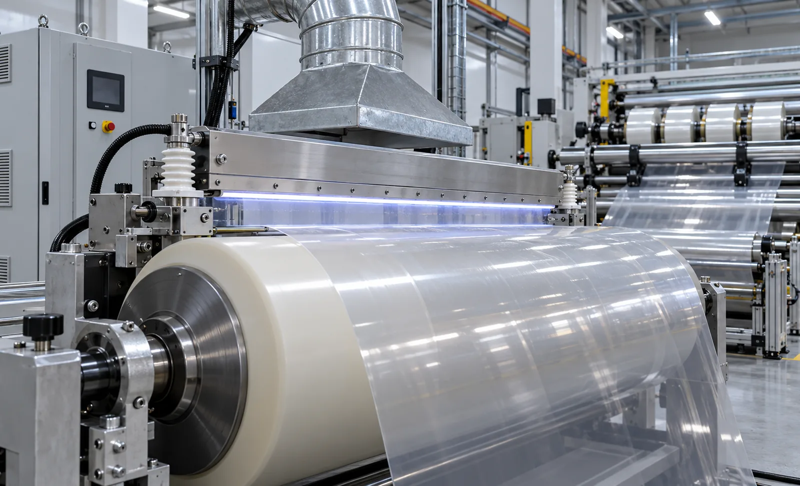
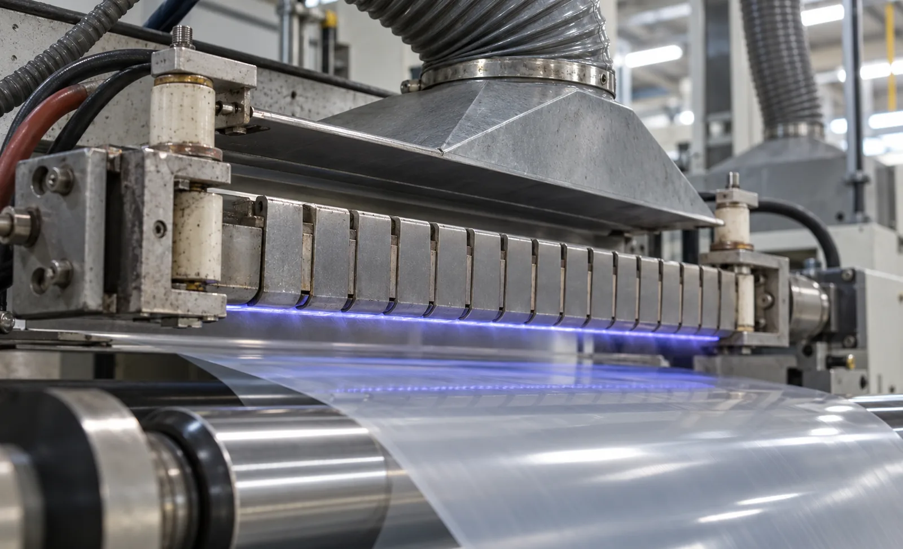

Published September 25, 2026 | By HDPTH Technical Editorial Team

Corona treatment bombards the web surface with ionised air, oxidising it and raising surface energy so liquids wet and layers bond. The change is not permanent: treated films lose dyne level as they age or are handled. That is why converters specify the treater on the slitter rewinder — the last point where the web is full-width and the last chance to set surface properties before rolls ship.
When a slitting line actually needs corona treatment
Treatment earns its place under three conditions:
- Downstream bonding or wetting: printing, coating, laminating or adhesive converting that needs roughly 38–42 dyne/cm on films which arrive lower.
- Stock that has aged: films stored for months, or recovered stock, whose surface energy has decayed below specification.
- One-line supply: you sell slit rolls to customers who convert immediately and expect a stated dyne level on delivery.
If your customer treats the web in their own process anyway, confirm the requirement before buying the hardware.
Treat before or after slitting?
Treating the wide parent web before the slitting section is the default. One full-width electrode covers every lane, the generator and controls are sized once, and the treated face passes over fewer rollers afterwards — contact after treatment can rub the surface back down. After-slitting treatment only makes sense when jobs convert pre-treated stock and an occasional lane needs a top-up, or when only some lanes of the same web are destined for coating. Those applications need multiple narrow stations or a traversing electrode, which multiplies cost, controls and maintenance points. Decide from your order mix, not the equipment catalogue.
Sizing: power density, not kilowatts
The meaningful number is dose — watts per square metre of treated area — and treated area is width times speed. Give the supplier your material, width, maximum speed and target dyne level, and require the sizing calculation in writing with the dyne result demonstrated on your material. Generators need headroom above the continuous rating for speed peaks, and the treater must track machine speed so the dose per unit area stays constant through acceleration. Clarify whether treatment is single-side or double-side, since double-side needs a second station or a double-sided design.
Electrode, roll and ozone maintenance
A treater is a maintenance commitment. The electrode collects contamination and arcs when dirty, leaving pinholes in coatings; cleaning intervals must be stated in operating hours for your dust load. The dielectric-covered backup roll degrades with ozone, heat and web debris — inspect for tracking marks and loss of coverage, and record dyne trend data so re-covering is scheduled on evidence. Ozone must be extracted and diluted below workplace limits. Because the discharge also charges the web, pair the station with static control, and coordinate the treater’s extraction with your dust extraction layout.
| Decision | What to specify | Why it matters |
|---|---|---|
| Necessity | Downstream process and its dyne requirement, measured on your incoming stock | Double treatment wastes capital and can over-treat the surface |
| Placement | Full-width station before the slitting section; treated face away from roller contact | One station covers every lane; post-slit narrow treatment multiplies cost |
| Sizing | Watts per square metre for material, width and maximum speed, with headroom | Undersized treaters hit their limit exactly when line speed is raised |
| Dose control | Automatic speed tracking and recipe-stored power setpoints per material | Manual power settings drift with speed and change the dyne result |
| Maintenance | Electrode cleaning interval, roll inspection plan, ozone filter service | Dirty electrodes arc and pinhole; degraded rolls lower treatment uniformity |
| Acceptance | Dyne level across the full width, on your material, at production speed | Nameplate wattage proves nothing about your actual result |

Need surface energy on the finished roll?
Send HDPTH your material, width, speed, current dyne level and downstream requirement. We will integrate a correctly sized treater station and quote it with an acceptance test on your material.
Submit Your Project InquiryQuestions to put to every vendor
- What dyne level will the station reach on my material at maximum speed, measured across the width?
- Where does the station sit relative to the unwind, slitting section and rewinder, and how many rollers touch the treated face afterwards?
- What is the cleaning interval for the electrode, and what does the backup roll re-covering cycle cost?
- How is ozone extracted, and what airflow and filter service does the site need to provide?
- Does the generator track line speed automatically, and are dose setpoints stored per recipe?
Building the full specification?
Read our guides on factory acceptance test checklists and web cleaning systems to align surface treatment with the rest of your acceptance requirements.
Contact HDPTHFrequently asked questions
When does a slitting line actually need corona treatment?
Only when the downstream process needs the surface energy to wet a liquid or bond to another layer and the incoming web’s dyne level is below the required value. Printing, coating, laminating and adhesive tape converting typically need surface energy around 38–42 dyne/cm; many films leave the extruder above that and decay back down during storage. If your downstream supplier treats the web anyway, duplicating the step adds cost without benefit.
Should the web be treated before or after slitting?
Usually before. Treating the wide parent web once covers every lane with a single, easier-to-control station, keeps the treated surface away from roller contact in the narrow lanes, and applies the same dose across the full width. After-slitting treatment suits short-run jobs on pre-treated stock or when only certain lanes need treatment, but needs narrower electrodes and often several stations.
How is power density sized for corona treatment?
Sizing starts from the target dyne level, web material, maximum width and maximum line speed, expressed in watts per square metre of treated area — width times speed gives the area throughput, and the generator power follows from the dose the material needs. Ask the supplier to state the calculation, name the materials tested and commit to a dyne-level result at your production speed, not at a demonstration speed.
What maintenance does a corona treater need on a slitter rewinder?
The main items are the electrode and the coated roller: clean the electrode at the agreed interval to prevent arcing and pinholes, inspect ceramic insulation for tracking marks, and keep the dielectric roller surface smooth and clean because ozone, coating and dust degrade it. Also service the ozone exhaust filters, check the backup roll bearings, and record dyne-level trend data so electrode wear is replaced on evidence, not after a batch fails.
What safety features should the treater include?
Ozone extraction sized to dilute below workplace limits, interlocked high-voltage access guards with the generator locked out when opened, and earthing that bleeds the web charge so treated film does not discharge onto operators or electronics. Corona also generates electrostatic charge of its own, so pair the station with static control and verify both together during acceptance testing.
Sources
- ASTM International: test methods for wetting tension of film surfaces, including corona-treated films
- TAPPI: technical resources on film and nonwoven converting, surface treatment and testing
- INDA: association of the nonwoven fabrics industry — materials and converting references
- ISO 12100: risk assessment and risk reduction for machinery, applicable to high-voltage treater stations
- OSHA: occupational exposure limits and ventilation guidance relevant to ozone handling